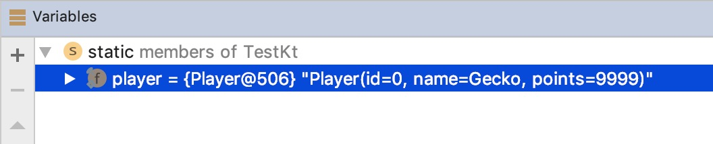

Item 37: Use the data modifier to represent a bundle of data
Sometimes we just need to pass around a bundle of data. This is what we use data classes for. These are classes with the data modifier. From my experience, developers quickly introduce it into their data model classes:
data class Player(
val id: Int,
val name: String,
val points: Int
)
val player = Player(0, "Gecko", 9999)
When we add the data modifier, it generates a few useful functions:
toStringequalsandhashCodecopycomponentN(component1,component2, etc.)
Let’s discuss them one after another in terms of data classes.
toString displays the name of the class and the values of all primary constructor properties with their names. Useful for logging and debugging.
print(player) // Player(id=0, name=Gecko, points=9999)

equals checks if all primary constructor properties are equal, and hashCode is coherent with it (see 41: Respect the contract of hashCode).
player == Player(0, "Gecko", 9999) // true
player == Player(0, "Ross", 9999) // false
copy is especially useful for immutable data classes. It creates a new object where each primary constructor properties have the same value by default, but each of them can be changed using named arguments.
val newObj = player.copy(name = "Thor")
print(newObj) // Player(id=0, name=Thor, points=9999)
We cannot see the copy method because it is generated under the hood just like the other methods generated thanks to the data modifier. If we were able to see it, this is what it would look like for the class Person:
// This is how `copy` is generated under the hood by
// data modifier for `Person` class looks like
fun copy(
id: Int = this.id,
name: String = this.name,
points: Int = this.points
) = Player(id, name, points)
Notice that copy method makes a shallow copy of an object, but it is not a problem when object is immutable - for immutable objects we do not need deep copies.
componentN functions (component1, component2, etc.) allow position-based destructuring. Like in the below example:
val (id, name, pts) = player
Destructuring in Kotlin translates directly into variable definitions using the componentN functions, so this is what the above line will be compiled to under the hood:
// After compilation
val id: Int = player.component1()
val name: String = player.component2()
val pts: Int = player.component3()
Position-based destructuring has its pros and cons. The biggest advantage is that we can name variables however we want. We can also destructure everything we want as long as it provides componentN functions. This includes List and Map.Entry:
val visited = listOf("China", "Russia", "India")
val (first, second, third) = visited
println("$first $second $third")
// China Russia India
val trip = mapOf(
"China" to "Tianjin",
"Russia" to "Petersburg",
"India" to "Rishikesh"
)
for ((country, city) in trip) {
println("We loved $city in $country")
// We loved Tianjin in China
// We loved Petersburg in Russia
// We loved Rishikesh in India
}
On the other hand, it is dangerous. We need to adjust every destructuring when the order of elements in data class change. It is also easy to destructure incorrectly by confusing order:
data class FullName(
val firstName: String,
val secondName: String,
val lastName: String
)
val elon = FullName("Elon", "Reeve", "Musk")
val (name, surname) = elon
print("It is $name $surname!") // It is Elon Reeve!
We need to be careful with destructuring. It is useful to use the same names as data class primary constructor properties. Then in case of an incorrect order, an IntelliJ/Android Studio warning will be shown. It might be even useful to upgrade this warning into an error.

Do not destructure to get just the first value like in the example below:
data class User(val name: String)
val (name) = User("John")
This might be really confusing and misleading for a reader. Especially when you destructure in lambda expressions:
data class User(val name: String)
fun main() {
val user = User("John")
user.let { a -> print(a) } // User(name=John)
// Don't do that
user.let { (a) -> print(a) } // John
}
It is problematic because in some languages parantheses around arguments in lambda expressions are optional or required.
Prefer data classes instead of tuples
Data classes offer more than what is generally offered by tuples. More concretely, Kotlin tuples are just generic data classes which are Serializable and have a custom toString method:
public data class Pair<out A, out B>(
public val first: A,
public val second: B
) : Serializable {
public override fun toString(): String =
"($first, $second)"
}
public data class Triple<out A, out B, out C>(
public val first: A,
public val second: B,
public val third: C
) : Serializable {
public override fun toString(): String =
"($first, $second, $third)"
}
Why do I show only Pair and Triple? It is because they are the last tuples that are left in Kotlin. Kotlin had support for tuples when it was still in the beta version. We were able to define a tuple by brackets and a set of types: (Int, String, String, Long). What we achieved, in the end, behaved the same as data classes, but was far less readable. Can you guess what type this set of types represents? It can be anything. Using tuples is tempting, but using data classes is nearly always better. This is why tuples were removed and only Pair and Triple are left. They stayed because they are used for local purposes:
- When we immediately name values:
val (description, color) = when {
degrees < 5 -> "cold" to Color.BLUE
degrees < 23 -> "mild" to Color.YELLOW
else -> "hot" to Color.RED
}
- To represent an aggregate not known in advance — as is commonly found in standard library functions:
val (odd, even) = numbers.partition { it % 2 == 1 }
val map = mapOf(1 to "San Francisco", 2 to "Amsterdam")
In other cases, we prefer data classes. Take a look at an example: Let’s say that we need a function that parses a full name into name and surname. One might represent this name and surname as a Pair<String, String>:
fun String.parseName(): Pair<String, String>? {
val indexOfLastSpace = this.trim().lastIndexOf(' ')
if(indexOfLastSpace < 0) return null
val firstName = this.take(indexOfLastSpace)
val lastName = this.drop(indexOfLastSpace)
return Pair(firstName, lastName)
}
// Usage
val fullName = "Marcin Moskała"
val (firstName, lastName) = fullName.parseName() ?: return
The problem is that when someone reads it, it is not clear that Pair<String, String> represents a full name. What is more, it is not clear what is the order of the values. Someone could think that surname goes first:
val fullName = "Marcin Moskała"
val (lastName, firstName) = fullName.parseName() ?: return
print("His name is $firstName") // His name is Moskała
To make usage safer and the function easier to read, we should use a data class instead:
data class FullName(
val firstName: String,
val lastName: String
)
fun String.parseName(): FullName? {
val indexOfLastSpace = this.trim().lastIndexOf(' ')
if(indexOfLastSpace < 0) return null
val firstName = this.take(indexOfLastSpace)
val lastName = this.drop(indexOfLastSpace)
return FullName(firstName, lastName)
}
// Usage
val fullName = "Marcin Moskała"
val (firstName, lastName) = fullName.parseName() ?: return
It costs nearly nothing, and improves the function significantly:
- The return type of this function is clear.
- The return type is shorter and easier to pass forward.
- If a user destructures to variables with different names than those described in the data class, a warning will be displayed.
If you don’t want this class in a wider scope, you can restrict its visibility. It can even be private if you need to use it for some local processing only in a single file or class. It is worth using data classes instead of tuples. Classes are cheap in Kotlin, do not be afraid to use them.